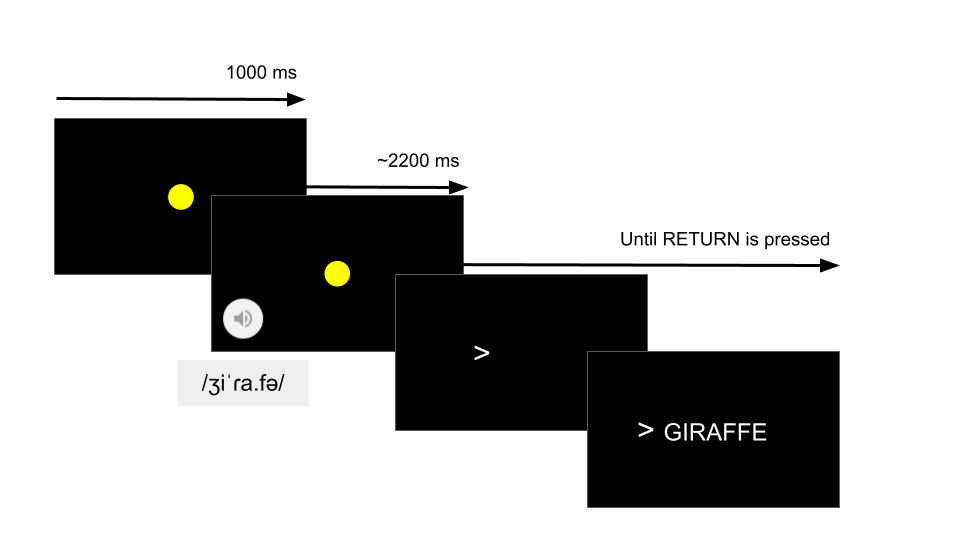

| N1 |
Age
|
L2 | ||
|---|---|---|---|---|
| Mean ± SD | Range | |||
| spa-ENG | 35 (8) | 21.80 ± 2.08 | 18–26 | Russian (1) |
| cat-ENG | 36 (4) | 21.72 ± 2.25 | 18–25 | French (1), German (1), Italian (1), Punjabi (1), Several (1) |
| 1 Number of included participants (number of excluded participants.) | ||||
The role of cognateness in native spoken word recognition
Gonzalo García-Castro
Serene Siow
Kim Plunkett
Nuria Sebastian-Galles
sap2024translation | 2024-09-24
Source: https://www.youtube.com/watch?v=8FXQ38-ZQK0&t=11s, Tiktok: kegan_stiles
https://www.youtube.com/watch?v=sdyC1BrQd6g&list=PL217-5XHnpx1Tb3FRXqWmPZX2UV4m2I-2
https://www.youtube.com/watch?v=7bYG7duRYV0&t=1s
https://www.youtube.com/watch?v=EW_Q4IYpbWE
Homophonic translation
- Words/phrases in one language are translated to similar-sounding phrases without necessarility preserving its meaning
- Intentional (literary figure, e.g., poetry) (Gasparov 2006) or spontaneous
What are the psycholinguistic foundations of spontaneous homophonic translation?
Homophonic translation
Otake (2017): analysed 194 instances of Soramimi broadcaster between 1992 and 2007 by the TV show Soramimi hour
- English song lyrics to words (4%) and phrases (96%) in Japanese
- English phonetic features preserved with varying degrees in their Japanese translations
Homophonic translation
Otake (2017): Japanese listeners accommodated English input strings to Japanese phonology (Peperkamp, Vendelin, and Nakamura 2008; Dupoux et al. 1999).
| Process | English word | Japanese word |
|---|---|---|
| Insertion | cry /ˈkɹaɪ/ | kurai (くらい) /ˈkɯ̟ɾa̠i/ [dark] |
| Deletion | go /ˈɡoʊ/ | go (*ご) /ˈɡo̞/ [go (board game)] |
| Alternation | low /ˈloʊ/ | rou (ろう) /ˈɾo̞ː/ [wax] |
Our study
- Characterise the psycholinguistic bases of homophonic translation
- What leads to a correct homophonic translation (i.e., homophonic translation with preservation of meaning)?
- Interplay between phonological similarity and phonological neighbourhood density
Our study
- More phonological similarity (i.e., cognateness), higher probability of correct translation
- More phonological neighbours, lower probability of correct translation
Phonological similarity
Levenshtein similarity (Similarity) between the phonological representation of two word-forms
Levenshtein distance: number of edits (additions, deletions, substitutions) needed to make both strings identical.
\(\text{Similarity} = 1-\frac{\text{Levenshtein}(\text{Word}_1,~\text{Word}_2)}{\max(\text{Length}(\text{Word}_1),~\text{Length}(\text{Word}_2))}\)
\(\text{Similarity}(\textsf{pinɡwino}, \textsf{pɛŋɡwɪn}) = 1-\frac{4}{8} = 0.5\)
Phonological similarity
Phonological similarity
Phonological neighbourhood density
- Cross-linguistic Phonological Neighbours (CLPN)
- Number of words in the native language that are one phoneme apart from the presented word (phonological neibourhoods).
Only counting CLPN with higher lexical frequency than the correct translation.
Phonological neighbourhood density
Experiment 1
English participants listening to Catalan (cat-ENG) or Spanish (spa-ENG).
Participants
- British English native adults living in the UK
- Recruited from Prolific
- No prior relevant familiarity with Catalan, Spanish or any other Romance language (self-reported).
Task design
Implemented in Psychopy, deployed online via Pavlovia.
Stimuli
- High-frequency Catalan and Spanish nouns
- Recorded by a Catalan-Spanish proficient bilingual in a child-directed manner
Catalan list (n = 94)
6.67 phon (SD = 2.06, Range = 2-11) English translations: 5.12 char long (SD = 1.56, Range = 3-9)
Spanish list (n = 105)
7.27 phon long (SD = 2.05, Range = 3-13) English translations: 5.29 char long (SD = 1.77, Range = 3-12).
Results
Manual coding of responses as:
Valid responses Included in dataset
- Correct1 (1)
- Incorrect (0)
Invalid responses Excluded from dataset
Blank, comments to experimenters, responses in languages other than English, etc.
Results
| N |
Accuracy (%)
|
Valid trials
|
|||||||
|---|---|---|---|---|---|---|---|---|---|
| Mean | SD | SE | Range | Mean | N trials | SD | Range | ||
| spa-ENG | 27 | 15.86 | 5.20 | 3.05 | 8.82–28.71 | 96.37 | 2,602 | 2.88 | 87–98 |
| cat-ENG | 32 | 18.48 | 4.89 | 3.27 | 10.84–32.56 | 81.38 | 2,604 | 3.17 | 71–83 |
| Sum | 59 | — | — | — | — | — | 5,206 | — | 158 |
| Mean | — | 17.17 | 5.05 | 3.16 | — | 8,887.27 | — | 302.71 | — |
Results
Bayesian generalised linear mixed model (brms).
\[ \begin{aligned} &\textbf{Likelihood} \\ y_{i} \sim & \text{Bernoulli}(p_{i}) \\ &\textbf{Parameters} \\ \text{Logit}(p_{i}) = & \beta_{0[p,w]} + \beta_{1[p]} \text{Frequency}_{i} + \beta_{2[p]} \text{PTHN}_i + \\ &\beta_{3[p]} \text{Similarity}_i + \beta_{4[p]} (\text{PTHN}_i \times \text{Similarity}_i) \\ \beta_{0-6[p,w]} \sim & \mathcal{N}(\mu_{\beta_{j}}, \sigma_{\beta_{j}}) \text{, for participant } p \text{ in 1, ..., } P \text{ and word } w \text{ in 1, ..., } W \\ \beta_{1-6[p]} \sim & \mathcal{N}(\mu_{\beta_{j}}, \sigma_{\beta_{j}}) \text{, for participant } p \text{ in 1, ..., } P \\ &\textbf{Prior} \\ \mu_{\beta_{p,w}} \sim & \mathcal{N}(0, 0.1) \\ \sigma_{\beta_{p}}, \sigma_{\beta_{w}} \sim & \text{HalfCauchy}(0, 0.1) \\ \rho_{p}, \rho_{w} \sim & \text{LKJCorr}(8) \\ \end{aligned} \]
Results

Figure 1
Discussion
- Word-forms in an unfamiliar language activate their translation equivalents in the native language, provided:
- Some phonological similarity between both words
- Few phonological neighbors of higher frequency
- Participants surprisingly good at translating words from Catalan and Spanish (two unfamiliar languages)
- Do speakers of typologically closer languages to Catalan and Spanish benefit even more strongly from phonological similarity in the same task?
Discussion
| Typological family | Other examples | |
|---|---|---|
| English | Germanic | Dutch, German |
| Catalan, Spanish | Romance | Italian, French |
English shares fewer phonologically similar translations with Romance languages than Romance languages share with each other.
Is the probability of homophonic translations higher in unfamiliar languages from the same typological family as the native language?
Experiment 2
Spanish participants listening to Catalan (cat-SPA)
Experiment 2
| n | N1 |
Age
|
L2 | ||
|---|---|---|---|---|---|
| Mean ± SD | Range | ||||
| cat-SPA | 33 | 33 (12) | 21.85 ± 3.00 | 18–33 | French (9), German (1), Italian (2) |
| 1 Number of included participants (number of excluded participants.) | |||||
Stimuli: Spanish list from Experiment 1.
Same as in Experiment 1.
Results
| N |
Accuracy (%)
|
Valid trials
|
|||||||
|---|---|---|---|---|---|---|---|---|---|
| Mean | SD | SE | Range | Mean | N trials | SD | Range | ||
| cat-SPA | 21 | 48.30 | 5.29 | 10.54 | 38.27–58.97 | 79.14 | 1,662 | 3.14 | 72–82 |
| Sum | 21 | — | — | — | — | — | 1,662 | — | 72 |
| Mean | — | 48.30 | 5.29 | 10.54 | — | 7,914.29 | — | 313.51 | — |
Results

Figure 2
Discussion
- Spanish natives exploited phonological similarity to translate unfamiliar Catalan words
- Positive impact of phonological similarity more resilient to interference from phonological neighbours
- Low-similarity Catalan and Spanish words in Experiments 1 and 2 were responded to with surprising accuracy
Discussion
| Translation | IPA | Accuracy (%) | SE | |
|---|---|---|---|---|
| Experiment 1 (cat-ENG) | ||||
| cavall - horse | kə’baʎ - hɔːs | 17.14 | 6.37 | |
| llibre - book | ˈʎi.βɾə - bʊk | 17.14 | 6.37 | |
| camisa - shirt | ka.’mi.za - ʃɜːt | 16.67 | 6.21 | |
| poma - apple | ˈpo.ma - ˈæpl | 16.67 | 6.21 | |
| cama - leg | ˈka.mə - lɛg | 11.11 | 5.24 | |
| Experiment 2 (spa-ENG) | ||||
| pantalon - trousers | paŋ.taˈlon - ˈtraʊzəz | 77.42 | 7.51 | |
| naranja - orange | naˈɾaŋ.xa - ˈɒrɪnʤ | 41.94 | 8.86 | |
| leche - milk | ˈle.t͡ʃe - mɪlk | 35.48 | 8.59 | |
| toro - bull | ˈto.ɾo - bʊl | 33.33 | 8.61 | |
| libro - book | ˈli.βɾo - bʊk | 30.00 | 8.37 | |
| cebra - zebra | ˈθe.bɾa - ˈziːbrə | 29.03 | 8.15 | |
| pan - bread | pan - brɛd | 29.03 | 8.15 | |
| pollo - chicken | ˈpo.ʎo - ˈʧɪkɪn | 26.67 | 8.07 | |
| jirafa - giraffe | xi’ɾa.fa - ʤɪˈrɑːf | 20.69 | 7.52 | |
| perro - dog | pe.ro - dɒg | 16.13 | 6.61 | |
| pluma - feather | plu.ma - ˈfɛðə | 16.13 | 6.61 | |
| puerta - door | pwer.ta - dɔː | 16.13 | 6.61 | |
| pie - foot | pje - fʊt | 12.90 | 6.02 | |
| caballo - horse | kaˈβa.ʎo - hɔːs | 10.34 | 5.66 | |
| bocadillo - sandwich | bo.kaˈdi.ʎo - ˈsænwɪʤ | 10.00 | 5.48 | |
| globo - balloon | ˈɡlo.βo - bəˈluːn | 10.00 | 5.48 | |
| Experiment 3 (cat-SPA) | ||||
| fulla - hoja | ˈfu.ʎə - ˈo.xa | 30.43 | 9.59 | |
| ull - ojo | uʎ - ˈo.xo | 21.74 | 8.60 | |
| got - vaso | ˈɡɔt - ˈba.so | 20.00 | 8.00 | |
| entrepa - bocadillo | ˌen.tɾəˈpa - bo.kaˈdi.ʎo | 13.04 | 7.02 | |
| mirall - espejo | miˈɾaʎ - es’pe.xo | 12.50 | 6.75 |
Experiment 3
English participants listening to Catalan (cat-ENG) or Spanish (spa-ENG) [Now with confidence reports]
Experiment 3
Collected additional data about participants’ prior familiarity with the presented Catalan and Spanish words
| n | N1 |
Age
|
L2 | ||
|---|---|---|---|---|---|
| Mean ± SD | Range | ||||
| spa-ENG | 32 | 32 (1) | 21.72 ± 2.59 | 18–26 | German (2), Japanese (1) |
| cat-ENG | 32 | 32 (0) | 22.31 ± 2.39 | 18–26 | Cantonese (1), Irish (1) |
| 1 Number of included participants (number of excluded participants.) | |||||
Stimuli: same as in Experiment 1.
Task design: same task design as in Experiment 1. After each trial, binary rating of previous knowledge of the meaning of the presented word.
Results
| Group | Reported knowledge | Confidence (0-8) |
|---|---|---|
| cat-ENG | Yes (14.18%) | 5.05 ± 1.94 |
| No (85.82%) | 1.13 ± 1.38 | |
| spa-ENG | Yes (7.18%) | 4.79 ± 1.82 |
| No (92.82%) | 1.25 ± 1.66 |
We removed answers in which participants reported prior knowledge of word meaning.
Results
| N |
Accuracy (%)
|
Valid trials
|
|||||||
|---|---|---|---|---|---|---|---|---|---|
| Mean | SD | SE | Range | Mean | N trials | SD | Range | ||
| spa-ENG | 31 | 20.92 | 8.29 | 3.76 | 5.88–44.12 | 97.45 | 3,021 | 1.80 | 88–98 |
| cat-ENG | 32 | 19.74 | 4.94 | 3.49 | 10.34–27.91 | 82.75 | 2,648 | 0.44 | 82–83 |
| Sum | 63 | — | — | — | — | — | 5,669 | — | 170 |
| Mean | — | 20.33 | 6.62 | 3.62 | — | 9,010.08 | — | 112.22 | — |
Results

Figure 3
Discussion
- After removing responses with reported prior knowledge, results are equivalent to Experiment 1
- In the absence of prior knwledge, participants exploit phonological similarity to provide correct translations
General discussion
- We explored the psycholinguistic bases of homophonic translation
- Auditory words from an unfamiliar language trigger native-like dynamics of lexical activation and selection
- Listeners are able to exploit to non-native speech signal to translate unfamiliar words with surprisingly high accuracy
- When presented language and native language are typologically close, participants benefited from phonological similarity more strongly
- Larger pool of words and word-pairs
References
Dupoux, Emmanuel, Kazuhiko Kakehi, Yuki Hirose, Christophe Pallier, and Jacques Mehler. 1999. “Epenthetic Vowels in Japanese: A Perceptual Illusion?” Journal of Experimental Psychology: Human Perception and Performance 25 (6): 1568.
Gasparov, Mikhail Leonovich. 2006. Semen Kirsanov. Semen. Stikhotvorenija i poemy. Sankt-Peterburg: Akademicheskij proekt.
Peperkamp, Sharon, Inga Vendelin, and Kimihiro Nakamura. 2008. “On the Perceptual Origin of Loanword Adaptations: Experimental Evidence from Japanese.” Phonology 25 (1): 129–64.